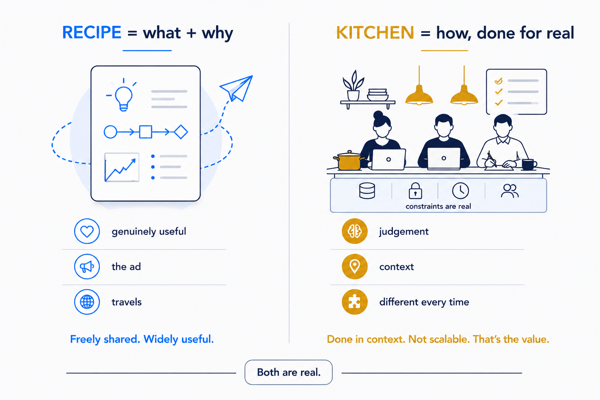
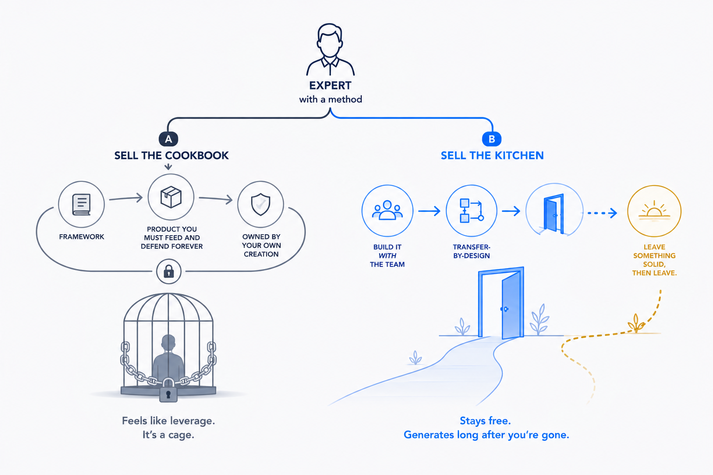

The fear that keeps experts quiet
Most people who are good at something keep the good part to themselves. The logic feels airtight: if I explain how I do this, why would anyone pay me to do it?
So they publish carefully. Vague think-pieces. "It depends." A LinkedIn post that gestures at an insight without ever landing on one. The method — the actual, reusable how — stays locked in a drawer, guarded like a trade secret.
I think that's exactly backwards. And I've bet my own positioning on the opposite move: give the recipe away, and sell the kitchen.
What's the recipe, and what's the kitchen
A recipe is the what and the why. Here's the shape of the thing. Here's the principle underneath it. Here's the order the steps go in and why that order matters. A good recipe is genuinely useful — you can read it and understand how a dish works, even improve your own cooking.
The kitchen is the how, done for real. A working kitchen under real constraints: your ingredients, your equipment, your timing, your guests, the thing that went wrong at 7pm on a Friday. Judgement built from having done it a hundred times. The recipe tells you a soufflé needs a hot oven; it doesn't stand next to you at your oven, in your kitchen, and get it to rise.
Translate that out of the metaphor: the recipe is the published thesis, the named concept, the diagram, the walk-through. The kitchen is the engagement — coming into a real organisation, with its real data, its real politics and its real deadlines, and making the thing actually work.
You can give the recipe away completely and still have a full order book, because the recipe was never the scarce thing. The kitchen is.

Why giving it away works better than hoarding it
Three reasons, and they compound.
The recipe is the ad. A vague post proves nothing. A specific, useful method proves you actually know the thing — because only someone who's done it could write it down that cleanly. The free recipe isn't a leak; it's the strongest advertisement you have. It says this person can clearly do this louder than any list of credentials.
Useful travels; vague doesn't. People share the piece that helped them. They don't share the piece that hedged. A genuinely useful method gets forwarded, quoted, and cited — it does your reach for you. The hoarded version reaches no one, because there's nothing in it worth passing on.
It filters for the right clients. The people who read your recipe and think "great, I'll build it myself" were never going to hire you — and that's fine, you've helped them and kept the goodwill. The people who read it and think "I get it, and I want you to do this in my shop" are exactly the clients worth having. The recipe does your qualifying before the first conversation.
The honest part: this only works if the kitchen is real
There's a failure mode, and it's important. "Give the recipe" is not a trick to look generous while secretly withholding the useful bit. If the free content is deliberately crippled — the recipe with a step left out so you have to buy the kitchen — people feel it immediately, and the trust you were building evaporates.
The model only works if two things are true at once: the recipe is genuinely useful on its own, and the kitchen is genuinely worth paying for anyway. Both. The free thesis has to stand up by itself. And the paid engagement has to offer something the recipe structurally can't — judgement, context, and the doing of it — so that even a reader who fully understood the recipe would still rather have you in the kitchen.
That's the discipline: give away the whole recipe, hold back nothing, and let the value of the kitchen speak for itself.
Sell the kitchen, not the cookbook
There's a tempting adjacent business here, and it's a trap: become the person who sells the cookbook. Turn the method into a framework, the framework into a product, the product into the thing you now have to feed and defend forever. It looks like leverage. Often it's a cage — you end up owned by your own creation, forever maintaining the framework instead of doing the work that made it worth writing down.
I'd rather sell the kitchen. Come in, choose the patterns with the team, build them together so the knowledge lives in the people from day one, and leave something solid behind — then leave. No dependency engineered on purpose. No framework to guard. The recipe stays free and public; the kitchen is where I actually add value, and it's different every time because every organisation's kitchen is different.

Why I can say this out loud
The reason I can write this article — an article that literally gives away the recipe for giving away recipes — is that it proves its own point. If publishing my method were a threat to my business, this piece would be a mistake. It isn't. It's the ad.
This whole hub is the recipe: the thesis, the named concepts, the walk-throughs of systems I've actually built on my own data — right down to the machine that publishes this site. All free, all yours to use. And if, reading it, you find yourself thinking I want this working in my organisation, not just in my reading list — that's the kitchen, and that's the conversation to have.
Give the recipe. Sell the kitchen. The generosity isn't a cost of the business. It's the engine of it.